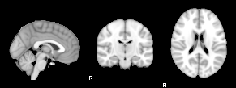

SIENAX Reportsienax_optibet /data/henry7/PBR/subjects/mse1831/alignment/ms1049-mse1831-002-AX_T1_3D_IRSPGR.nii.gz -r -d -o sienax_optibet_NN |
BET brain extraction results

FLIRT standard space registration results
Field-of-view and standard space masking
Red shows the standard-space-based brain mask combined with the field-of-view mask (if used). Blue shows the original BET-derived brain mask. Green shows the intersection of the two.
Final SIENAX segmentation results
Whole-brain segmentation
Peripheral cortex masked segmentation
Ventricle masked segmentation
Estimated volumes:
tissue volume unnormalised-volume pgrey 1 1 (peripheral grey) vcsf 1 1 (ventricular CSF) GREY 1 1 WHITE 1 1 BRAIN 2.00 2.00
SIENAX Methods
Brain tissue volume, normalised for subject head size, was
estimated with SIENAX [Smith 2001, Smith 2002], part of FSL [Smith
2004]. SIENAX starts by extracting brain and skull images from the
single whole-head input data [Smith 2002b]. The brain image is then
affine-registered to MNI152 space [Jenkinson 2001, Jenkinson 2002]
(using the skull image to determine the registration scaling); this is
primarily in order to obtain the volumetric scaling factor, to be used
as a normalisation for head size. Next, tissue-type segmentation with
partial volume estimation is carried out [Zhang 2001] in order to
calculate total volume of brain tissue (including separate estimates
of volumes of grey matter, white matter, peripheral grey matter and
ventricular CSF).
[Smith 2001] S.M. Smith, N. De Stefano, M. Jenkinson, and P.M. Matthews.
[Smith 2002] S.M. Smith, Y. Zhang, M. Jenkinson, J. Chen, P.M. Matthews, A. Federico, and N. De Stefano.
[Smith 2004] S.M. Smith, M. Jenkinson, M.W. Woolrich, C.F. Beckmann, T.E.J. Behrens, H. Johansen-Berg, P.R. Bannister, M. De Luca, I. Drobnjak, D.E. Flitney, R. Niazy, J. Saunders, J. Vickers, Y. Zhang, N. De Stefano, J.M. Brady, and P.M. Matthews.
[Smith 2002b] S.M. Smith.
[Jenkinson 2001] M. Jenkinson and S.M. Smith.
[Jenkinson 2002] M. Jenkinson, P.R. Bannister, J.M. Brady, and S.M. Smith.
[Zhang 2001] Y. Zhang, M. Brady, and S. Smith.
Normalised accurate measurement of longitudinal brain change.
Journal of Computer Assisted Tomography, 25(3):466-475, May/June 2001.
Accurate, robust and automated longitudinal and cross-sectional brain change analysis.
NeuroImage, 17(1):479-489, 2002.
Advances in functional and structural MR image analysis and
implementation as FSL.
NeuroImage, 23(S1):208-219, 2004.
Fast robust automated brain extraction.
Human Brain Mapping, 17(3):143-155, November 2002.
A global optimisation method for robust affine registration of brain images.
Medical Image Analysis, 5(2):143-156, June 2001.
Improved optimisation for the robust and accurate linear registration and motion correction of brain images.
NeuroImage, 17(2):825-841, 2002.
Segmentation of brain MR images through a hidden Markov random field model and the expectation maximization algorithm.
IEEE Trans. on Medical Imaging, 20(1):45-57, 2001.